|
Home · All Namespaces · All Classes · Grouped Classes · Modules · Functions | |
The following classes provide implementations of various abstract server widget interfaces. The subsequent pictures demonstrate the large variety of user interfaces which can be created using the abstact server widget concept:
| Abstract server widget | Implementation | ||
|---|---|---|---|
| QAbstractMessageBox | PhoneMessageBox | SlideInMessageBox | |
| 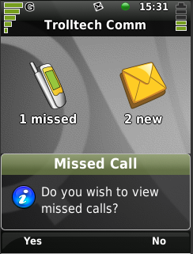 | 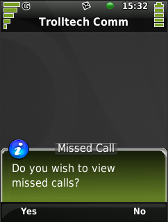 | ||
| QAbstractBrowserScreen | GridBrowserScreen | WheelBrowserScreen | DeskphoneBrowserScreen |
| 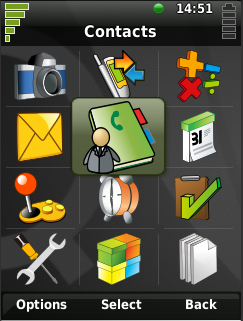 | 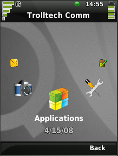 |  | |
| QAbstractDialerScreen | PhoneQuickDialerScreen | PhoneTouchDialerScreen | |
| 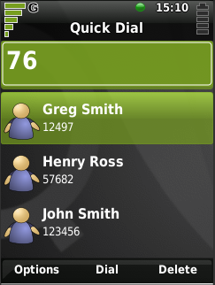 | 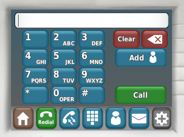 | ||
| QAbstractCallScreen | ThemedCallScreen | DeskphoneCallScreen | |
| 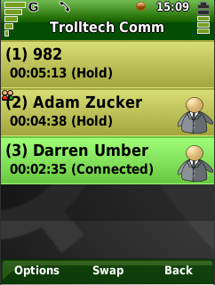 | 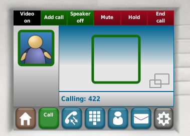 | ||
| QAbstractContextLabel | ThemedContextLabel | DeskphoneContextLabel | |
| 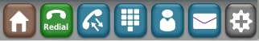 | |||
| QAbstractHomeScreen, QAbstractCallHistory, QAbstractTaskManager | ThemedHomeScreen | PhoneCallHistory | DefaultTaskManager |
| 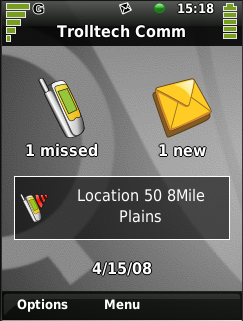 | 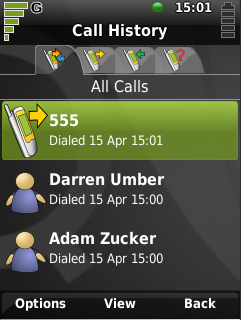 | 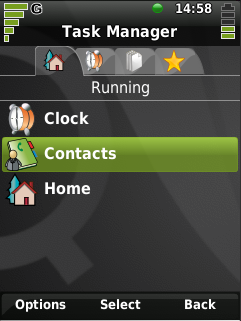 | |
| Other examples | E1 | E2 | E3 |
| 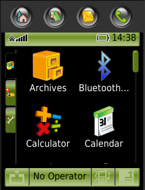 | 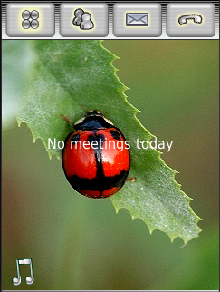 | 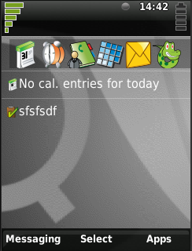 | |
Note: The implementations for E1, E2 and E3 can be found in src/server/phone/samples and are accessable via the Serverwidgets settings applications.
The themed versions of a particular server widgets can also change their appearance based on the theme being used. For more details refer to the theme documentation. This allows even more flexibility without having to change the actual server widget implementation.
| BaseContextLabel::BaseButton | Storage for the buttons used by the BaseContextLabel class |
|---|---|
| BaseContextLabel | Dockable soft key bar for phones |
| BasicHomeScreen | Most functionality required by a HomeScreen except the actual user interface |
| CallContactDelegate | The delegate for CallContactListView |
| CallContactItem | Wrapper for call entries |
| CallContactListView | View for call entries |
| CallContactModel | Underlying model for the call contact list view |
| DefaultTaskManager | The standard Qt Extended task manager |
| DeskphoneBrowserScreen | Application launcher view suitable for a desk phone |
| DeskphoneCallScreen | The call screen for Qt Extended Home |
| DeskphoneContextLabel | Themable dockable soft key bar for Qt Extended Home |
| GridBrowserScreen | The main launcher grid for Qt Extended Phone |
| PhoneCallHistory | The Qt Extended Phone call history widget |
| PhoneHeader | Dockable, themeable phone header |
| PhoneLauncher | Implments the main UI widget for the Qt Extended |
| PhoneMessageBox | Implements the Qt Extended Phone message box |
| PhoneQuickDialerScreen | Implements a keypad based dialer UI |
| PhoneTouchDialerScreen | Implements a touchscreen dialer |
| PlatformServerInterface | Simple main widget for Qt Extended |
| SlideInMessageBox | Implements a sliding message box |
| ThemedCallScreen | Phone call screen |
| ThemedContextLabel | Themable dockable soft key bar for phones |
| ThemedHomeScreen | The home screen for Qt Extended |
| ThemedSecondaryDisplay | Implements the secondary display for Qt Extended Phone |
| WheelBrowserScreen | Wheel based application launcher view |
| Copyright © 2009 Trolltech | Trademarks | Qt Extended 4.4.3 |